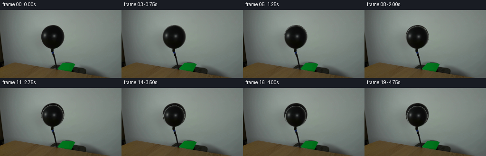
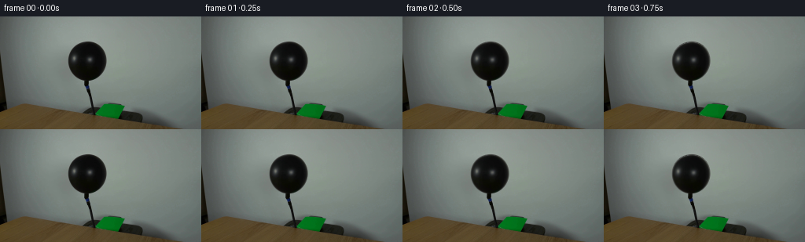
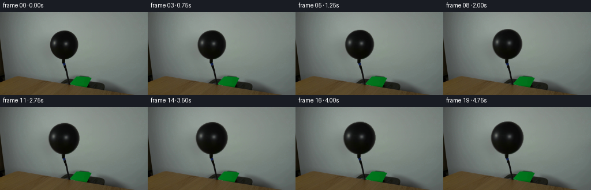
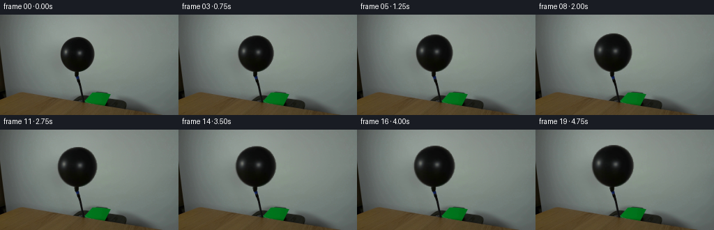
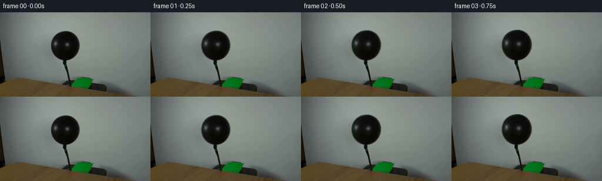

CODING AGENTS AS PIXEL WORLD MODELS
traex/DeepSeek-V4.1-Flash · 0039
点击播放 · 原生 RGB 像素
逐轮保存的候选
回放视频、检查图与代码变化。
每份候选均可单独播放。实际图片检查记录在下方工具轨迹中。
候选 01播放与检查图
点击播放 · 原生 RGB 像素


展开代码变化
--- 上一保存版本
+++ 本次保存版本
@@ -0,0 +1,126 @@
+from pathlib import Path
+
+import cv2
+import numpy as np
+from PIL import Image
+
+import artifact_io
+
+
+CASE_DIR = Path(__file__).resolve().parent
+WIDTH, HEIGHT = 256, 144
+FRAME_COUNT = 20
+FPS = 4
+
+
+def balloon_mask(frame: np.ndarray) -> np.ndarray:
+ """Find the connected dark balloon body above the hose."""
+ gray = cv2.cvtColor(frame, cv2.COLOR_RGB2GRAY)
+ roi = np.zeros_like(gray, dtype=np.uint8)
+ roi[24:84, 76:148] = 255
+ dark = ((gray < 120) & (roi > 0)).astype(np.uint8) * 255
+ dark = cv2.morphologyEx(dark, cv2.MORPH_CLOSE, np.ones((3, 3), np.uint8))
+
+ contours, _ = cv2.findContours(dark, cv2.RETR_EXTERNAL, cv2.CHAIN_APPROX_NONE)
+ body = max(contours, key=cv2.contourArea)
+ mask = np.zeros_like(gray, dtype=np.uint8)
+ cv2.drawContours(mask, [body], -1, 255, cv2.FILLED)
+
+ # Include the antialiased rim without bringing in the background.
+ expanded = cv2.dilate(mask, np.ones((3, 3), np.uint8), iterations=1)
+ rim = (gray < 132).astype(np.uint8) * 255
+ return cv2.bitwise_and(expanded, rim)
+
+
+def smoothstep(value: float) -> float:
+ value = float(np.clip(value, 0.0, 1.0))
+ return value * value * (3.0 - 2.0 * value)
+
+
+def inflation_scales(frame_index: int) -> tuple[float, float]:
+ """Return width and height scale about the fixed hose attachment."""
+ t = frame_index / (FRAME_COUNT - 1)
+ progress = smoothstep(t)
+
+ # Small elastic pulses are layered on a monotonic, modest inflation.
+ pulse = 0.5 - 0.5 * np.cos(2.0 * np.pi * 2.25 * t)
+ scale_x = 1.0 + 0.155 * progress + 0.0025 * pulse
+ scale_y = 1.0 + 0.145 * progress + 0.0040 * pulse
+ return scale_x, scale_y
+
+
+def warped_balloon(
+ frame: np.ndarray, mask: np.ndarray, scale_x: float, scale_y: float
+) -> tuple[np.ndarray, np.ndarray]:
+ pivot_x, pivot_y = 111.0, 81.0
+ inverse = np.array(
+ [
+ [1.0 / scale_x, 0.0, pivot_x - pivot_x / scale_x],
+ [0.0, 1.0 / scale_y, pivot_y - pivot_y / scale_y],
+ ],
+ dtype=np.float32,
+ )
+
+ source = cv2.GaussianBlur(frame, (3, 3), 0.45)
+ texture = cv2.warpAffine(
+ source,
+ inverse,
+ (WIDTH, HEIGHT),
+ flags=cv2.INTER_LINEAR,
+ borderMode=cv2.BORDER_REFLECT_101,
+ )
+ alpha = cv2.warpAffine(
+ mask,
+ inverse,
+ (WIDTH, HEIGHT),
+ flags=cv2.INTER_LINEAR,
+ borderMode=cv2.BORDER_CONSTANT,
+ borderValue=0,
+ ).astype(np.float32) / 255.0
+ alpha = np.clip((alpha - 0.035) / 0.93, 0.0, 1.0)
+ return texture, alpha
+
+
+def add_membrane_light(frame: np.ndarray, alpha: np.ndarray, frame_index: int) -> np.ndarray:
+ """Add a restrained moving sheen while preserving the photographed reflections."""
+ yy, xx = np.mgrid[0:HEIGHT, 0:WIDTH]
+ phase = 2.0 * np.pi * frame_index / FRAME_COUNT
+
+ # A broad upper-left light wrap, strongest inside the balloon body.
+ cx = 101.5 + 0.7 * np.sin(phase)
+ cy = 49.0 + 0.5 * np.cos(phase)
+ glow = np.exp(-(((xx - cx) / 19.0) ** 2 + ((yy - cy) / 15.0) ** 2))
+ glow *= alpha * (0.018 + 0.008 * smoothstep(frame_index / (FRAME_COUNT - 1)))
+
+ # Keep the effect neutral and slightly cool, like the scene's soft daylight.
+ light = np.array([170.0, 185.0, 178.0], dtype=np.float32)
+ result = frame.astype(np.float32)
+ result += glow[:, :, None] * light
+ return np.clip(result, 0, 255)
+
+
+def render_frame(first: np.ndarray, mask: np.ndarray, frame_index: int) -> np.ndarray:
+ if frame_index == 0:
+ return first.copy()
+
+ scale_x, scale_y = inflation_scales(frame_index)
+ texture, alpha = warped_balloon(first, mask, scale_x, scale_y)
+
+ foreground = add_membrane_light(texture, alpha, frame_index)
+ composite = alpha[:, :, None] * foreground + (1.0 - alpha[:, :, None]) * first
+ return np.clip(np.rint(composite), 0, 255).astype(np.uint8)
+
+
+def main() -> None:
+ first = np.asarray(Image.open(CASE_DIR / "first_frame.png").convert("RGB"))
+ if first.shape != (HEIGHT, WIDTH, 3):
+ raise ValueError(f"Unexpected first-frame shape: {first.shape}")
+
+ mask = balloon_mask(first)
+ frames = np.stack([render_frame(first, mask, i) for i in range(FRAME_COUNT)])
+ frames[0] = first
+ artifact_io.save(frames, CASE_DIR)
+
+
+if __name__ == "__main__":
+ main()
候选 02播放与检查图
点击播放 · 原生 RGB 像素

展开代码变化
--- 上一保存版本
+++ 本次保存版本
@@ -53,10 +53,11 @@
frame: np.ndarray, mask: np.ndarray, scale_x: float, scale_y: float
) -> tuple[np.ndarray, np.ndarray]:
pivot_x, pivot_y = 111.0, 81.0
+ # warpAffine maps destination coordinates back into the source image.
inverse = np.array(
[
- [1.0 / scale_x, 0.0, pivot_x - pivot_x / scale_x],
- [0.0, 1.0 / scale_y, pivot_y - pivot_y / scale_y],
+ [scale_x, 0.0, pivot_x - pivot_x * scale_x],
+ [0.0, scale_y, pivot_y - pivot_y * scale_y],
],
dtype=np.float32,
)
候选 03播放与检查图
点击播放 · 原生 RGB 像素


展开代码变化
--- 上一保存版本
+++ 本次保存版本
@@ -40,12 +40,13 @@
def inflation_scales(frame_index: int) -> tuple[float, float]:
"""Return width and height scale about the fixed hose attachment."""
t = frame_index / (FRAME_COUNT - 1)
- progress = smoothstep(t)
+ # Elastic inflation begins promptly and then tapers as membrane tension rises.
+ progress = 0.25 * t + 0.75 * (1.0 - (1.0 - t) ** 1.6)
# Small elastic pulses are layered on a monotonic, modest inflation.
pulse = 0.5 - 0.5 * np.cos(2.0 * np.pi * 2.25 * t)
- scale_x = 1.0 + 0.155 * progress + 0.0025 * pulse
- scale_y = 1.0 + 0.145 * progress + 0.0040 * pulse
+ scale_x = 1.0 + 0.22 * progress + 0.0030 * pulse
+ scale_y = 1.0 + 0.20 * progress + 0.0045 * pulse
return scale_x, scale_y
可观测工具轨迹
实际执行的命令与返回图片。
命令 1exit 0
/bin/bash -c "pwd && rg --files -g '"'!*.git*'"' | sed -n '1,120p'"
命令 2exit 0
/bin/bash -c "sed -n '1,240p' prompt.txt"
命令 3exit 0
/bin/bash -c "sed -n '1,280p' GENERATION_RULES.md"
命令 4exit 0
/bin/bash -c 'file first_frame.png && identify first_frame.png 2>/dev/null || true && ls -la'
命令 5exit 0
/bin/bash -c "sed -n '1,260p' artifact_io.py"
命令 6exit 0
/bin/bash -c "python - <<'PY'
from PIL import Image
import numpy as np
im=Image.open('first_frame.png')
print(im.mode, im.size, im.info)
a=np.asarray(im.convert('RGB'))
print(a.shape,a.dtype,a.min(),a.max(),a.mean(axis=(0,1)))
# common colors quantized 16 bins
q=(a//16)*16
u,c=np.unique(q.reshape(-1,3),axis=0,return_counts=True)
for i in np.argsort(c)[-20:][::-1]: print(tuple(u[i]),int(c[i]))
PY"命令 7exit 0
/bin/bash -c "python - <<'PY'
from PIL import Image
import numpy as np
try:
import cv2; print('cv2',cv2.__version__)
except Exception as e: print('no cv2',e)
a=np.asarray(Image.open('first_frame.png').convert('RGB'))
# luminance ascii 80x45 average, reversed ramp
l=0.2126*a[:,:,0]+0.7152*a[:,:,1]+0.0722*a[:,:,2]
# downsample exact-ish via PIL
im=Image.fromarray(np.uint8(np.clip(l,0,255))).resize((80,45),Image.Resampling.BOX)
x=np.asarray(im)
ramp=' .:-=+*#%@'
for row in x:
print(''.join(ramp[min(len(ramp)-1,int(v)*(len(ramp)-1)//256)] for v in row))
PY"命令 8exit 0
/bin/bash -c "python - <<'PY'
from PIL import Image
import numpy as np
a=np.asarray(Image.open('first_frame.png').convert('RGB'))
l=.2126*a[:,:,0]+.7152*a[:,:,1]+.0722*a[:,:,2]
# crop center, 1 pixel horizontal and 2 vertical maybe print each 2px avg
for y0,y1,x0,x1 in [(0,95,55,200),(0,144,0,256)]:
c=l[y0:y1,x0:x1]
im=Image.fromarray(np.uint8(c)).resize((110,64),Image.Resampling.BOX)
x=np.asarray(im)
print('\\nCROP',x0,x1,y0,y1)
ramp=' .:-=+*#%@'
for row in x:
print(''.join(ramp[min(9,int(v)*10//256)] for v in row))
PY"命令 9exit 0
/bin/bash -c "python - <<'PY'
from PIL import Image
import numpy as np, cv2
a=np.asarray(Image.open('first_frame.png').convert('RGB'))
gray=cv2.cvtColor(a,cv2.COLOR_RGB2GRAY)
for t in [15,25,35,45,55,65,75,85,95,105]:
m=(gray<t).astype(np.uint8)
n,lab,stats,cent=cv2.connectedComponentsWithStats(m,8)
comps=sorted([(int(s[4]),tuple(map(int,s[:4])),tuple(np.round(c,1))) for s,c in zip(stats[1:],cent[1:])],reverse=True)[:8]
print('THR',t,'count',m.sum(),'comps',comps)
PY"命令 10exit 0
/bin/bash -c "python - <<'PY'
from PIL import Image
import numpy as np
a=np.asarray(Image.open('first_frame.png').convert('RGB'))
# print crop as character by RGB class. 3x2 averaged, x 70..160 y25..130
for y in range(24,134,2):
s=''
for x in range(64,164,2):
p=a[y:y+2,x:x+2].mean(axis=(0,1)); r,g,b=p
if max(p)<25: c='@'
elif max(p)<45: c='#'
elif max(p)<70: c='O'
elif max(p)<90: c='o'
elif r>g+20 and r>b+20: c='R'
elif b>r+20 and b>g+10: c='B'
elif g>r+15: c='G'
elif max(p)<115: c='+'
elif max(p)<140: c='-'
else: c='.'
s+=c
print(f'{y:3d}',s)
PY"命令 11exit 0
/bin/bash -c "python - <<'PY'
from PIL import Image
import numpy as np
a=np.asarray(Image.open('first_frame.png').convert('RGB'))
pts=[(110,60),(110,35),(110,45),(95,55),(120,55),(105,70),(113,82),(114,90),(114,100),(114,110),(80,70),(150,70),(110,20),(110,125),(70,130),(180,130),(110,115),(100,115)]
for x,y in pts: print((x,y),a[y,x].tolist())
# stats in rectangles
for name,(x0,y0,x1,y1) in {'balloon':(88,33,133,83),'rim':(85,35,135,85),'bgleft':(55,30,85,85),'bgright':(135,30,180,85),'hose':(110,84,121,112),'table':(80,118,140,140)}.items():
p=a[y0:y1,x0:x1].reshape(-1,3)
print(name,'mean',p.mean(0).round(1),'p5',np.percentile(p,5,axis=0).round(0),'p95',np.percentile(p,95,axis=0).round(0))
PY"命令 12exit 0
/bin/bash -c "python - <<'PY'
from PIL import Image
import numpy as np
a=np.asarray(Image.open('first_frame.png').convert('RGB'))
g=.2126*a[:,:,0]+.7152*a[:,:,1]+.0722*a[:,:,2]
for t in [30,50,70,90,110,125]:
print('THRESH',t)
for y in range(28,122,2):
s=''
for x in range(80,145,2):
p=g[y:y+2,x:x+2].mean()
s += '#' if p<t else '.'
print(s)
print()
PY"命令 13exit 0
/bin/bash -c "python - <<'PY'
from PIL import Image
import numpy as np
from scipy.ndimage import gaussian_filter
im=Image.open('first_frame.png').convert('RGB')
a=np.asarray(im).astype(float)
g=np.dot(a,[.2126,.7152,.0722])
m=(g<115).astype(float)
m=gaussian_filter(m,3)
# estimate inpaint whole central object by OpenCV, candidates
import cv2
mask=np.zeros(a.shape[:2],np.uint8)
# object mask include y<121, dark connected, x 75..145
mask[(g<118)&(np.indices(g.shape)[1]>=78)&(np.indices(g.shape)[1]<145)&(np.indices(g.shape)[0]<120)]=255
mask=cv2.dilate(mask,np.ones((5,5),np.uint8),iterations=1)
for rad in [3,7,15]:
out=cv2.inpaint(np.asarray(im),mask,rad,cv2.INPAINT_TELEA)
Image.fromarray(out).save(f'.tmp/inpaint{rad}.png')
# Save mask visual
Image.fromarray(mask).save('.tmp/mask.png')
PY"命令 14exit 0
/bin/bash -c "python - <<'PY'
from PIL import Image
import numpy as np
a=np.asarray(Image.open('first_frame.png').convert('RGB'))
g=.2126*a[:,:,0]+.7152*a[:,:,1]+.0722*a[:,:,2]
for t in [60,90,110]:
print('threshold',t)
for y in range(28,120,2):
xs=np.flatnonzero(g[y]<t)
xs=xs[(xs>=75)&(xs<=145)]
if len(xs):
print(f'{y:3d}: {xs.min():3d}-{xs.max():3d} n={len(xs):2d}')
PY"命令 15exit 0
/bin/bash -c "python - <<'PY'
from PIL import Image
import numpy as np
for f in ['first_frame.png','.tmp/inpaint3.png','.tmp/inpaint7.png','.tmp/inpaint15.png']:
a=np.asarray(Image.open(f).convert('RGB'))
l=.2126*a[:,:,0]+.7152*a[:,:,1]+.0722*a[:,:,2]
print('\\n',f)
for y in range(28,88,3):
print(''.join(' .:-=+*#%@'[min(9,int(l[y,x])*10//180)] for x in range(80,142,2)))
PY"命令 16exit 0
/bin/bash -c "python - <<'PY'
from PIL import Image
import numpy as np, cv2
A=np.asarray(Image.open('first_frame.png').convert('RGB'))
g=.2126*A[:,:,0]+.7152*A[:,:,1]+.0722*A[:,:,2]
Y,X=np.indices(g.shape)
# balloon and hose mask based on dark local object, restricted to rough silhouette
m=((Y<82)&(g<115)&(((X-111)/24.5)**2+((Y-57)/25.5)**2<1.08))
# hose polygon rough
poly=np.array([[106,80],[118,80],[119,117],[106,117]],np.int32)
m |= cv2.fillPoly(np.zeros_like(g,np.uint8),[poly],1).astype(bool)&(g<125)&(Y>=79)&(Y<117)
# manual mask exact silhouette threshold plus halo expansion
m=cv2.dilate(m.astype(np.uint8),np.ones((5,5),np.uint8),iterations=1)>0
Image.fromarray((m*255).astype(np.uint8)).save('.tmp/mask2.png')
for rad in [2,4,8]:
out=cv2.inpaint(A,m.astype(np.uint8),rad,cv2.INPAINT_TELEA)
Image.fromarray(out).save(f'.tmp/plate{rad}.png')
print(rad,np.asarray(out)[60,111],np.asarray(out)[40,111],np.asarray(out)[100,114])
PY"命令 17exit 0
/bin/bash -c "python - <<'PY'
import cv2, numpy as np
from PIL import Image
A=np.asarray(Image.open('first_frame.png').convert('RGB'))
lum=cv2.cvtColor(A,cv2.COLOR_RGB2GRAY)
roi=np.zeros_like(lum,np.uint8); roi[24:84,76:148]=255
m=((lum<118)&(roi>0)).astype(np.uint8)*255
m=cv2.morphologyEx(m,cv2.MORPH_CLOSE,np.ones((3,3),np.uint8))
cs,_=cv2.findContours(m,cv2.RETR_EXTERNAL,cv2.CHAIN_APPROX_NONE)
for c in sorted(cs,key=cv2.contourArea,reverse=True)[:8]:
print('area',cv2.contourArea(c),'bbox',cv2.boundingRect(c),'center',cv2.mean(c)[:2])
PY"命令 18exit 0
/bin/bash -c "python - <<'PY'
import cv2, numpy as np
from PIL import Image
A=np.asarray(Image.open('first_frame.png').convert('RGB'))
l=cv2.cvtColor(A,cv2.COLOR_RGB2GRAY)
# sample smooth background model via median-ish local blur on areas outside mask, then inpaint
roi=np.zeros_like(l,np.uint8); roi[24:84,76:148]=255
m=((l<120)&(roi>0)).astype(np.uint8)*255
m=cv2.morphologyEx(m,cv2.MORPH_CLOSE,np.ones((5,5),np.uint8))
# expand 4px
m=cv2.dilate(m,np.ones((7,7),np.uint8))
# only central area and hose
hose=np.zeros_like(m); cv2.rectangle(hose,(106,79),(121,117),255,-1)
# mask hose dark only
mh=((l<120)&(hose>0)).astype(np.uint8)*255
mh=cv2.dilate(mh,np.ones((5,5),np.uint8))
m=cv2.bitwise_or(m,mh)
out=cv2.inpaint(A,m,5,cv2.INPAINT_NS)
Image.fromarray(out).save('.tmp/plate_ns.png')
Image.fromarray(m).save('.tmp/mask_ns.png')
# create visual magnified crop nearest 4x
Image.fromarray(A[24:124,76:148]).resize((288,400),Image.Resampling.NEAREST).save('.tmp/orig_crop.png')
Image.fromarray(out[24:124,76:148]).resize((288,400),Image.Resampling.NEAREST).save('.tmp/plate_crop.png')
PY"命令 19exit 0
/bin/bash -c "python - <<'PY'
from PIL import Image
import numpy as np
for f in ['.tmp/orig_crop.png','.tmp/plate_crop.png']:
a=np.asarray(Image.open(f).convert('RGB'))
l=.2126*a[:,:,0]+.7152*a[:,:,1]+.0722*a[:,:,2]
print('\\n',f)
im=Image.fromarray(np.uint8(l)).resize((72,50),Image.Resampling.BOX)
x=np.asarray(im)
ramp=' .:-=+*#%@'
for row in x: print(''.join(ramp[min(9,int(v)*10//256)] for v in row))
PY"命令 20exit 0
/bin/bash -c "python - <<'PY'
from PIL import Image
import numpy as np
A=np.asarray(Image.open('first_frame.png').convert('RGB'))
l=.2126*A[:,:,0]+.7152*A[:,:,1]+.0722*A[:,:,2]
for y in range(34,82,4):
s=''
for x in range(86,138,2):
v=l[y,x]
s += ' .:-=+*#%@'[min(9,int(v)*10//130)]
print(f'{y:3d}',s)
print('max coords luma in mask')
m=(l<120); m[:24]=0;m[84:]=0;m[:,:76]=0;m[:,148:]=0
ys,xs=np.where(m)
print(xs.max()-xs.min(),ys.max()-ys.min())
# top bright pixel positions within balloon
for y in [36,40,44,48,52,56,60,64,68,72,76,80]:
vals=l[y,86:138]; ix=np.argsort(vals)[-5:][::-1]+86
print(y,[(int(x),int(l[y,x]),A[y,x].tolist()) for x in ix])
PY"命令 21exit 0
/bin/bash -c "python - <<'PY'
from PIL import Image
import numpy as np
A=np.asarray(Image.open('first_frame.png').convert('RGB'))
l=.2126*A[:,:,0]+.7152*A[:,:,1]+.0722*A[:,:,2]
# print full pixel values and luma for interesting crop 90..132 x 34..80 compact
for y in range(34,82,2):
print(f'y={y:02d}', ' '.join(f'{int(l[y,x]):3d}' for x in range(88,136,2)))
PY"命令 22exit 0
/bin/bash -c "python - <<'PY'
from PIL import Image
import numpy as np
A=np.asarray(Image.open('first_frame.png').convert('RGB'))
l=.2126*A[:,:,0]+.7152*A[:,:,1]+.0722*A[:,:,2]
# average RGB for bands to infer shading
for reg in [(100,40,108,50),(95,50,102,60),(120,50,128,65),(115,70,125,78),(106,52,118,66)]:
x0,y0,x1,y1=reg;p=A[y0:y1,x0:x1].reshape(-1,3)
print(reg,'mean',p.mean(0).round(1),'min',p.min(0),'max',p.max(0))
# color delta black (rgb diff)
p=A[35:80,87:135].reshape(-1,3)
print('overall',p.mean(0), 'percentiles',np.percentile(p,[5,25,50,75,95],axis=0))
PY"命令 23exit 0
/bin/bash -c "python - <<'PY'
import cv2,numpy as np
from PIL import Image
A=np.asarray(Image.open('first_frame.png').convert('RGB'))
l=cv2.cvtColor(A,cv2.COLOR_RGB2GRAY)
roi=np.zeros_like(l,np.uint8);roi[24:84,76:148]=255
m=((l<120)&(roi>0)).astype(np.uint8)*255
m=cv2.morphologyEx(m,cv2.MORPH_CLOSE,np.ones((3,3),np.uint8))
cs,_=cv2.findContours(m,cv2.RETR_EXTERNAL,cv2.CHAIN_APPROX_NONE)
c=max(cs,key=cv2.contourArea)
print('fit',cv2.fitEllipse(c))
# hu moments maybe
print('area',cv2.contourArea(c),'arc',cv2.arcLength(c,True))
PY"命令 24exit 0
/bin/bash -c "python - <<'PY'
from PIL import Image
import numpy as np
A=np.asarray(Image.open('first_frame.png').convert('RGB'))
l=.2126*A[:,:,0]+.7152*A[:,:,1]+.0722*A[:,:,2]
# fit ellipse centers/radii for each threshold and row extents
for t in [60,80,100,120]:
m=l<t;m[:25]=0;m[84:]=0;m[:,:75]=0;m[:,148:]=0
ys,xs=np.where(m)
# covariance ellipse
xy=np.stack([xs,ys],1);mu=xy.mean(0);cov=np.cov(xy.T);ev,evec=np.linalg.eigh(cov)
print(t,'bbox',xs.min(),xs.max(),ys.min(),ys.max(),'cent',mu,'std',np.sqrt(ev),'ang',np.degrees(np.arctan2(evec[1,-1],evec[0,-1])))
PY"命令 25exit 0
/bin/bash -c "python - <<'PY'
from PIL import Image
import numpy as np
A=np.asarray(Image.open('first_frame.png').convert('RGB'))
l=.2126*A[:,:,0]+.7152*A[:,:,1]+.0722*A[:,:,2]
for y in range(78,122,2):
print(f'{y:3d}', ' '.join(f'{int(l[y,x]):3d}' for x in range(100,126)))
PY"命令 26exit 0
/bin/bash -c 'python generate.py'
命令 27exit 0
/bin/bash -c "python - <<'PY'
from PIL import Image
import numpy as np
A=np.asarray(Image.open('first_frame.png').convert('RGB'))
F=np.stack([np.asarray(Image.open(f'frames/{i:02d}.png').convert('RGB')) for i in range(20)])
print('shape',F.shape,'dtype',F.dtype)
print('frame0 exact',np.array_equal(F[0],A),'maxdiff',np.abs(F[0].astype(int)-A).max())
# changed bbox per frame and dark region extents
for i in [0,1,4,8,12,16,19]:
d=np.any(F[i]"'!=A,axis=2); ys,xs=np.where(d)
l=.2126*F[i,:,:,0]+.7152*F[i,:,:,1]+.0722*F[i,:,:,2]
m=(l<120);m[:24]=0;m[84:]=0;m[:,:75]=0;m[:,148:]=0
ys2,xs2=np.where(m)
print(i,'"'changes',d.sum(),'bbox', (xs.min(),ys.min(),xs.max(),ys.max()) if len(xs) else None,'darkbbox',(xs2.min(),ys2.min(),xs2.max(),ys2.max()))
print('frame diffs',np.abs(F[1:].astype(int)-F[:-1].astype(int)).mean(axis=(1,2,3)).round(3))
PY"命令 28exit 0
/bin/bash -c "python - <<'PY'
from PIL import Image
import numpy as np
F=np.stack([np.asarray(Image.open(f'frames/{i:02d}.png').convert('RGB')) for i in range(20)])
# render montage with crops nearest at 4x for easy numeric/visual artifact review
crops=[]
for i in range(20):
im=Image.fromarray(F[i]).crop((68,20,156,124)).resize((352,416),Image.Resampling.NEAREST)
crops.append(im)
out=Image.new('RGB',(352*5,416*4),(20,20,20))
for i,im in enumerate(crops): out.paste(im,((i%5)*352,(i//5)*416))
out.save('.tmp/progression.png')
# print silhouette bounds at several luma thresholds, normalized by mask criterion
for i in [0,4,8,12,16,19]:
l=.2126*F[i,:,:,0]+.7152*F[i,:,:,1]+.0722*F[i,:,:,2]
m=(l<120);m[:24]=0;m[84:]=0;m[:,:75]=0;m[:,148:]=0
ys,xs=np.where(m)
print(i,'bbox',(xs.min(),ys.min(),xs.max(),ys.max()),'area',len(xs))
PY"命令 29exit 0
/bin/bash -c "python - <<'PY'
from PIL import Image
import numpy as np
F=np.stack([np.asarray(Image.open(f'frames/{i:02d}.png').convert('RGB')) for i in range(20)])
# compare outer background at silhouette points
for i in [0,1,4,8,12,16,19]:
A=F[i]
print('\\nframe',i)
for y in [31,32,33,34,35,36,38,40,80,82,84]:
vals=[int(.2126*A[y,x,0]+.7152*A[y,x,1]+.0722*A[y,x,2]) for x in [84,85,86,87,88,134,135,136,137]]
print(y,vals)
PY"命令 30exit 0
/bin/bash -c "python - <<'PY'
import generate as g
from PIL import Image
import numpy as np
A=np.asarray(Image.open('first_frame.png').convert('RGB'));m=g.balloon_mask(A)
for sx,sy in [(1,1),(1.155,1.145)]:
t,a=g.warped_balloon(A,m,sx,sy)
ys,xs=np.where(a>.5)
print(sx,sy,'bbox',xs.min(),xs.max(),ys.min(),ys.max(),'area',len(xs),'sum',a.sum())
PY"命令 31exit 0
/bin/bash -c "python - <<'PY'
import generate as g
from PIL import Image
import numpy as np
A=np.asarray(Image.open('first_frame.png').convert('RGB'));m=g.balloon_mask(A)
# matrix coordinate convention"'! verify warpAffine inverse and try forward/inverse
for mat in [np.array([[1/1.15,0,111-111/1.15],[0,1/1.15,81-81/1.15]],np.float32),np.array([[1.15,0,111-111*1.15],[0,1.15,81-81*1.15]],np.float32)]:
al=g.cv2.warpAffine(m,mat,(256,144),flags=g.cv2.INTER_LINEAR)
ys,xs=np.where(al>127)
print(mat.tolist(),'"'bbox',xs.min(),xs.max(),ys.min(),ys.max())
PY"命令 32exit 0
/bin/bash -c "python - <<'PY'
from PIL import Image
import numpy as np
F=np.stack([np.asarray(Image.open(f'frames/{i:02d}.png').convert('RGB')) for i in range(20)])
# find actual changed pixel bbox and alpha mask predicted for key frames
import generate as g
A=F[0];m=g.balloon_mask(A)
for i in [1,4,8,12,16,19]:
sx,sy=g.inflation_scales(i)
_,al=g.warped_balloon(A,m,sx,sy)
for th in [.02,.1,.5,.9]:
ys,xs=np.where(al>th)
print(i,round(sx,3),round(sy,3),th,(xs.min(),ys.min(),xs.max(),ys.max()),len(xs))
PY"命令 33exit 0
/bin/bash -c "python generate.py && python - <<'PY'
from PIL import Image
import numpy as np, generate as g
A=np.asarray(Image.open('first_frame.png').convert('RGB'))
F=np.stack([np.asarray(Image.open(f'frames/{i:02d}.png').convert('RGB')) for i in range(20)])
print('shape',F.shape,'dtype',F.dtype,'frame0 exact',np.array_equal(F[0],A))
m=g.balloon_mask(A)
for i in [0,1,4,8,12,16,19]:
sx,sy=g.inflation_scales(i);_,al=g.warped_balloon(A,m,sx,sy)
ys,xs=np.where(al>.5)
d=np.any(F[i]"'!=A,axis=2)
print(i,'"'scale',round(sx,3),round(sy,3),'alpha bbox',(xs.min(),ys.min(),xs.max(),ys.max()),'area',len(xs),'changed',d.sum())
print('consecutive mean abs diff',np.abs(F[1:].astype(int)-F[:-1].astype(int)).mean(axis=(1,2,3)).round(3))
PY"命令 34exit 0
/bin/bash -c "python generate.py && python - <<'PY'
from PIL import Image
import numpy as np, generate as g
A=np.asarray(Image.open('first_frame.png').convert('RGB'))
F=np.stack([np.asarray(Image.open(f'frames/{i:02d}.png').convert('RGB')) for i in range(20)])
m=g.balloon_mask(A)
print('frame0 exact:',np.array_equal(F[0],A))
for i in [0,1,4,8,12,16,19]:
sx,sy=g.inflation_scales(i);_,al=g.warped_balloon(A,m,sx,sy)
ys,xs=np.where(al>.5)
d=np.any(F[i]"'!=A,axis=2)
print(i,'"'scale',round(sx,3),round(sy,3),'alpha bbox',(xs.min(),ys.min(),xs.max(),ys.max()),'area',len(xs),'changed',d.sum())
print('diffs',np.abs(F[1:].astype(int)-F[:-1].astype(int)).mean(axis=(1,2,3)).round(3))
# check table and background outside object remain fixed
for i in [1,8,19]:
D=np.any(F[i]"'!=F[0],axis=2); ys,xs=np.where(D)
print('"'changed frame',i,'bbox',(xs.min(),ys.min(),xs.max(),ys.max()))
PY"保存候选 3 份；完成命令 34 次；可验证图片返回 0 张。原始 API 响应与完整日志保留在本地。